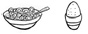
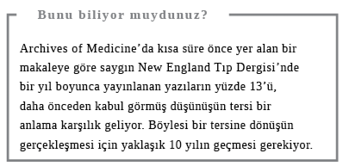

Kahvaltı Vakti
KAHVALTI GÜNÜN en önemli öğünüdür derler ama bunu en yüksek sesle söyleyenler, kahvaltılık gevrek ve benzeri ürünlerin üreticileridir. Onlar midelerimizi genelde şekerli ve nişasta bazlı ürünlerle doldurmakta kararlıdır. Yine de kalktıktan kısa süre sonra bir şeyler yemek önemlidir. Çoğu beslenme uzmanı öğlenden önce bir şey yenmediği zaman kan şekeri seviyesinin düşük kaldığı ve bunun da konsantrasyonu azalttığı konusunda hemfikir.
Çalışmalar ayrıca kahvaltı etmeyenlerin kilo almaya daha eğilimli olduklarını gösteriyor. O halde kahvaltı iyi bir fikir ama ne yiyip içmeliyiz? Bu bölüm evde ve işe giderken karşınıza çıkan sayısız seçenek arasında kestirme tercihler yapmanıza yardımcı olacak. Eğer kalkar kalkmaz bir şeyler yemekte zorlanıyorsanız, yanınıza işe götürmek üzere tam tahıllı ekmek arası fıstık ezmeli ya da yağsız jambonlu sandviç alın veya en azından çantanıza bir muz atın. Bir diğer sağlıklı -ve ucuz- seçenek ise iş yerinde bir paket az şekerli, tam tahıllı gevrek ve mevcutsa buzdolabında tutmak üzere süt ve/veya yoğurt ve meyve suyu bulundurmaktır. Bu sayede sabah sabah kahvecilerden veya pastanelerden yağlı, şekerli besinler alma eğilimini savuşturmuş olursunuz.
Ne İçmeli?
Çoğu zaman sabah yaptığımız ilk tercihtir: Çay mı kahve mi? Kişiden kişiye değişir, işte size yardımcı olabilecek birkaç ipucu.
Kafeinli mi, kafeinsiz mi?
Kafeinin fazlası kalp atışlarını hızlandırıp çarpıntı yaparak insanda gerginlik yaratıp uyku kaçırabilir. Ne var ki bir fincanı devirmeden gözünü açamayanların da bildiği üzere, kafein aynı zamanda merkezi sinir sistemini uyarır. Kahve ya da çay (siyah, yeşil ya da beyaz) güne başlarken uyanık kalmaya yardımcı olacak bir canlılık sağlar. Harvard bilimcilerinin 2011 Eylül’ünde yayınladığı bir çalışmaya göre günde iki ya da üç fincan kahve içen kadınların depresyon yaşama olasılığı azalıyor.
İngiltere’de kafein tüketimine ilişkin resmi bir kılavuz mevcut değil. Sadece yüksek kafein alımı düşük riskiyle ilişkilendirildiği için, gebelerin günde 200 mg’ı aşmaması öneriliyor. Yüksek tansiyonu veya anksiyetesi olanların da kafeinden sakınmaları gerekiyor. Sizin için doğru miktarın ne olduğu elbette ki yine size bağlı ama beslenme uzmanları günde dört ya da beş kafeinli içecek öneriyor ve bunların sonuncusunu öğleden sonra içmenizi söylüyorlar.
Ancak kafeinli içeceklerdeki kafein miktarının değişiklik gösterdiğini unutmayın. İngiltere’de içeceklerdeki kafein seviyesi üzerine yapılan bir araştırma, en hafif çaydaki 1 mg ile öğütülmüş en sert kahvedeki 254 mg arasında değişen seviyelerin bulunduğunu ortaya koydu. Kola gibi içecekler ile çikolatanın da kafein içerdiği aklınızda olsun.
Yanıt: Kafeinli
Taze sıkılmış meyve suyu mu, konsantre mi?
Çok sayıdaki meyve suyu seçeneği aklınızı karıştırıyorsa, işte size işin içyüzü:
l Konsantre meyve suyu, sıkılmış meyve suyunun pastörize edilmesi (zararlı bakterilerden arıtma amaçlı ısıl işlemden geçirilmesi) ve sulu içeriğin büyük oranda buharlaştırılmasıyla elde edilir. Ardından konsantre madde dondurulur ve sonradan yeniden meyve suyuna dönüştürmek için su eklenir.
l “Konsantre değildir” baresi taşıyan meyve suları yoğunlaştırılmamış ama pastörize edilmiştir.
l Taze sıkılmış meyve suyu pastörize değildir -ya da çok az pastörizedir- ki bu yüzden de satın alır almaz buzdolabında saklamanız gerekir. Raf ömrü kısadır.
Sağlıklı gıda fanatikleri konsantrasyon ya da pastörize gibi tüm işlemlerin meyve suyunda besin maddesi kaybına yol açtığını söylüyorlar ki bu, bir noktaya kadar doğru. Taze sıkılmış meyve sularını almak için maddi gücünüz yeterliyse ya da sabahları kendiniz meyve sıkacak vakti bulabiliyorsanız, hiç durmayın. Ancak konsantre üretilen meyve suları da sağlıklı, kullanışlı ve daha ucuz bir seçenektir. Sağlık açısından farklı meyveler için çeşitli yorumlar yapılıyor ama temel kural şöyle: Günde sadece bir bardak 150 ml’lik meyve suyu için. Fazlası, yüksek şeker ve asit içeriği yüzünden kilo aldırır ve dişlere zarar verir. Tek meyve çeşidi içeren meyve sularını tercih edin. Karışık olanlar, muz veya elma gibi daha şekerli meyvelerle doldurulmuş olabilir. Sadece % 100 meyve suyu olduğu belirtilen çeşitler, şeker dâhil katkı maddesi içermez.
Yanıt: Konsantre üretilmiş

Ne Yemeli?
Genelde aceleyle girdiğimiz ve hızlı bir çözüm aradığımız süpermarketlerde öyle çok seçenek var ki… Neyse ki kahvaltı, doğru yolu kolayca bulabileceğiniz tek öğün.
Gevrek mi, yumurta mı?
Kolay bir kahvaltı istiyorsanız, kahvaltılık gevrek hızlı bir çözüm olabilir ama rafadan, haşlanmış, çırpılmış ya da sahanda yumurta da hızlı bir yemektir. Sağlığınız için hangisi mi daha iyi? Yumurta düşük kalorili, proteinden yana zengin ve iyi bir vitamin kaynağı olan, besleyici bir besindir. Kolesterol içerse de bu, zararlı olan türden değildir ve genel kanının aksine yiyebileceğiniz belli bir sayı da belirlenmiş değildir. Öte yandan, kahvaltılık gevrek bol miktarda şeker içerebilir; granola ve kepekli-üzümlü gibi sözde “sağlıklı” seçenekler bile… Gevreği seçerseniz ilave şekeri olmayan tam buğdaylı çeşidinden şaşmayın ve kutu etiketinden ilave malzemeleri daima kontrol edin. Ya da tüm bu dedektiflik işlerinden kurtulun ve yumurtanızı küçük bir tencereye koyun, üzerini örtecek kadar soğuk su ekleyip kaynatın. Bu arada ekmek kızartma makinesine bir dilim tam tahıllı ekmek atın. Yumurtayı sevdiğiniz kıvama göre bir iki dakika kaynattıktan sonra ekmeğinize biraz zeytin ezmesi sürüp yumurtaya banarak yiyin.
Yanıt: Yumurta

Çok tahıllı mı, tam tahıllı mı?
Ekmek, kahvaltılık gevrek, makarna ve pirinç genelde dış kabukları alınmış, sadece ortadaki “rafine karbonhidrat” denen nişastalı kısmı bırakılmış tahıllardan yapılır. Rafine karbonhidrat önemli bir enerji kaynağıdır ama sağlık uzmanları daha besleyici olduğu için bizi tam tahıllı (ya da kepekli) karbonhidrat kaynaklarını tüketmeye teşvik eder. Tahılın dış tabakası olan kepek, liften yana zengindir ve sindirim sisteminin tıkanmasını önler. İç tabaka -tohum- ise bol miktarda besin maddesi içerir. “Çok tahıllı” ya da “tohumlu” ibaresi, bu güzelliklerden bolca barındırıyormuş düşüncesi uyandırsa da aslında çok az şey ifade eder. Bir somun çok tahıllı ekmek, içine biraz tahıl veya çekirdek atılmış rafine undan üretilirken, tam tahıllı ekmeğin ya da gevreğin büyük oranda tam tahıllı ürünler içermesi gerekir.
Yanıt: Tam tahıllı
Probiyotik yoğurt mu, normal mi?
Tüm yoğurt çeşitleri “canlı” bakteri barındırır ama hepsi probiyotik içermez. Bunlar bağırsaklarımızı sağlıklı tutan “yararlı bakteriler”dir ve sağlıklı bağırsak da genel sıhhatimiz açısından önemlidir. Probiyotikler en çok süt ürünlerinde bulunur; etikette özellikle Laktobasil veya Bifidobacterium ibaresini arayın. Probiyotiklerin diyare ve hassas bağırsak sendromu olanlara yaradığı söyleniyor. Astım gibi otoimmün rahatsızlıklara etki edebildiği yönündeki iddialar ise yeterince inandırıcı değil.
Probiyotiklerin günlük beslenmenin parçası olarak mı, yoksa ilave mi alınmasının daha iyi olduğunu gösteren bulgular henüz mevcut değil. Ancak çok düzenli tüketilmeleri gerektiği kesin. Biraz daha az ya da çok probiyotik yoğurt büyük bir fark yaratmaz. Yoğurt protein ve kalsiyum açısından da zengin olduğundan, zaten sağlıklı bir seçimdir; tabii doymuş yağ ya da ilave şeker içeren çeşitlerini seçmediyseniz. Kısacası onu diyetinizin düzenli bir parçası haline getirmenizde hiçbir sorun yok.
Probiyotiklerden genelde prebiyotiklerle bağlantılı olarak söz edilir. Prebiyotik, bazı meyve ve sebzelerde bulunan ve bağırsakta probiyotiklerin gelişimini destekleyen bir karbonhidrat türüdür. Onların da sindirim sorunlarına iyi geldiğini gösteren bazı araştırmalar mevcut. Probiyotik yoğurda birkaç dilim muz attığınızda işin içine biraz prebiyotik de katmış olursunuz.
Yanıt: Probiyotik
Normal fıstık ezmesi mi, yağı azaltılmış mı?
Yerfıstığı ezmesi kahvaltıda ekmeğe sürmek için iyi bir şey. Bunun nedeni proteinden yana nispeten zengin olması ve reçel ya da baldan daha uzun süre tok tutması. Fıstık aslında kuruyemiş değil, baklagil ailesindendir ve tıpkı nohut ve mercimek gibi sağlıklı bir yağ türü olan tekli doymamış yağları ve bolca besin maddesini içerir. 20 gr fıstık ezmesi yaklaşık 50 kalori olduğundan ilave tuz veya şeker içermeyen markalar kahvaltı için iyi bir seçenektir; özellikle de bir dilim tam tahıllı ekmek üzerine sürüldüğünde. Yağı azaltılmış çeşidi daha sağlıklı bir seçenektir diye düşünüyorsunuz, değil mi? Pek de öyle değil. Üreticiler bu üründen sağlıklı yağı atıp yerine işlenmiş gıdalarda ucuz “dolgu” maddesi işlevini gören bir karbonhidratı, yani maltodekstrin’i koyuyor. Bu durumda yerfıstığının yararlarını almak yerine boş karbonhidrat ve daha fazla şeker tüketmiş oluyorsunuz.
Yanıt: Normal
Tereyağı sürülebilir mi, katı mı?
Bir küçük topak tereyağı 75 kalori ve 10 gr “kolesterol yükselten doymuş yağ” içerir ki bu da kadınlar için önerilen günlük 20 gr’lık miktarın yarısıdır. Ayçiçek yağı ile zeytinyağı da bol kalorilidir, daha sağlıklı olan çoklu doymamış ve tekli doymamış yağları içerir. Tereyağına karşı koyamıyorsanız, onu oda sıcaklığında saklayın. Böylece hem sürmesi kolay olur hem de daha az kullanılır. Ya da yumuşak kalmasını sağlamak için sıvı yağ içeren, sürülebilir çeşidinden alın.
Yanıt: Sürülebilir
Nutella’lı ekmek mi, çikolatalı milföy mü?
Çikolata ve fındık ezmeli Nutella kulağa bir kaçamak gibi gelse de üzerine dolu bir tatlı kaşığı Nutella sürülmüş bir-iki dilim tam tahıllı ekmek, yaklaşık 280 kaloridir, ki bu, örneğin, Starbucks’ın çikolatalı milföyüyle aynıdır. Nutella tipi besinler yağ, rafine karbonhidrat ve şeker içerdiklerinden ağızda son derece lezzetli erirler. Nutella’lı tam tahıllı ekmek daha çok lif, protein ve besin içerdiği için daha uzun süre tok kalmanızı sağlar.
Yanıt: Nutellalı ekmek
Müsli mi, granola mı?
İkisi de kulağa sağlıklı gelir ama dikkatli olun. Müsli de granola da bol miktarda ilave şeker ile “yağ oranı yüksek” kuruyemiş içerdiği için oldukça kalorili olabilir. Her ikisinin de içeriğinde yulaf, çekirdek, kuruyemiş ve kuru meyve gibi çokça sağlıklı çiğ malzeme vardır ama granolanın kalorisi ve yağı daha fazladır, çünkü içindeki malzemeler önce yağ ve şurup karışımıyla kaplanmış, sonra fırınlanmıştır. Dolayısıyla müsliyi tercih etmek daha iyidir.
Alışverişi marketten yapıyorsanız kutunun üzerindeki etiketten ürün içeriğini inceleyip şeker ve yemiş miktarı az olan markaları seçin. Sandviç zincirleri yoğurtlu ve meyveli granola da satarlar. Bu baştan çıkarıcı küçük kaplar da yine koca bir yağ ve kalori deposudur. İngiltere zincirlerinden birinde, Bircher müsli 340 kalori ve 9,7 gr yağ, yoğurtlu granola ise 579 kalori ve 20 gr yağ içerir.
Yanıt: Müsli

Sağlık için Takviyeler
Kızılcık suyu mu, takviyesi mi?
Sistit kadınlarda görülen ve tedavi edilmediği takdirde hastaneye yatmayı bile gerektirebilen acılı ve rahatsızlık verici bir idrar yolları enfeksiyonudur. Kızılcık suyu ve kapsülleri ise söylenene göre bu rahatsızlık için etkili bir tedavi sağlar. Teoriye göre yemişin içindeki bir bileşik mesane duvarlarına tutunan zararlı bakteriyi durduruyor. Cochrane Collaboration tarafından 2009’da yürütülen birkaç deney, kızılcığın kadınlarda tekrarlanan enfeksiyonları önlediğini ama tedavi edemediğini gösterdi. Son araştırmalar ise meyvenin suyundan çok kapsüllerinin etkili olabildiğini ortaya koydu. Günlük önerilen kızılcık özütü miktarı ise 200 mg. Sistitiniz varsa kesinlikle denemeye değer. Ancak unutmayın sıkça tekrarlanan sistitin antibiyotikle tedavi edilmesi gerekebilir.
Yanıt: Takviyesi
Balık yağı takviyesi mi, multivitamin mi?
Vitaminler ve takviye haplar hakkında pek çok akıl karıştırıcı bilgi mevcut. Endüstrinin ne kadar büyük olduğu düşünülürse buna şaşırmamak gerek. İngiltere’de söz konusu endüstri 675 milyon sterlin değerinde. Makul derecede formda ve sağlıklıysanız ve bolca taze meyve, sebze, tam tahıllı gıda, bir miktar süt ürünü ve yağsız protein içeren dengeli bir beslenmeniz varsa multivitaminlere para harcamanıza değmeyebilir. Örneğin, önerilen günlük miktar (recommended daily amount / RDA değeri) olan 80 mg C vitaminini iri bir portakaldan alabilirsiniz. Aslında B ve C vitaminleri suda çözünebildiklerinden pahalı haplarınız büyük olasılıkla sifon suyuyla atılıp gidecek. Diğer vitaminler ise vücutta daha uzun süre depolanır. Özellikle A vitamini RDA’nın üzerinde alındığında zararlı olabilir (bir takviye hapın RDA’nın ne kadarını içerdiği şişenin ya da paketin üzerinde yazar. RDA hakkında daha fazla bilgi için bkz. Beslenmeyle İlgili Önemli Bilgiler).
Balık yağı sağlığımız için büyük önem taşıyan ve tansiyon ile kolesterolü dengeleyebilen Omega 3 yağ asitlerini içerir. Yağ asitleri antienflamatuar (iltihap giderme) işlevi de gördüğünden eklem ağrılarını azaltabilir. Omega 3’lerin beyin fonksiyonlarını geliştirebildiği ileri sürülse de henüz bu konuda somut bulgular mevcut değil. Balık yağı için belli bir RDA değeri olmasa da, örneğin İngiltere’de resmi öneri, Omega 3’lerden yararlanabilmek için her hafta somon, sardalya ve uskumru gibi yağlı balıklardan bir porsiyon yenmesi yönünde. Çoğumuz bunu yapmadığından takviye almayı düşünebiliriz. Ancak farklı markalarda yoğunluk değişiklik gösterdiği ve düşük doz da fazla etki sağlamadığı için uygun doz miktarı aralığının üst seviyelerine yakın dozları tercih edin. Takviyeler hazımsızlık yapabilir, bu yüzden satın alırken bunu önleyen markaları bulmaya çalışın.
Yanıt: Balık yağı
UZMAN GÖRÜŞÜ
“Ben balık yağı kapsülü alıyorum. Kanımca balık yağının kardiyovasküler riski azalttığı yönündeki veriler yeterince güçlü. Bu yüzden kullanıyorum.” Profesör Edzard Ernst, İngiltere, Exeter Üniversitesi, Tamamlayıcı Tıp Onursal Profesörü.

Soğuk algınlığı için çinko mu, ekinezya mı?
Bitkiden elde edilen echinacea purpurea’nın soğuk algınlığı süresini kısaltabildiği yönünde bazı bulgular olsa da Cochrane Collaboration’a göre araştırma hem kısaltma hem de önleme açısından çinkoyu destekliyor. Çinko pek çok gıdada doğal olarak bulunan bir mineral. Kırmızı et ve kümes hayvanı etinin yanında özellikle istiridye bu mineralden yana zengin. Çinkoyu dilerseniz takviye olarak da alabilirsiniz ama belli bir fark görebilmeniz için günlük olarak beş ay boyunca kullanmanız gerekir. Ekinezya tabletleri ise daha ucuza gelir.
Yanıt: Çinko

